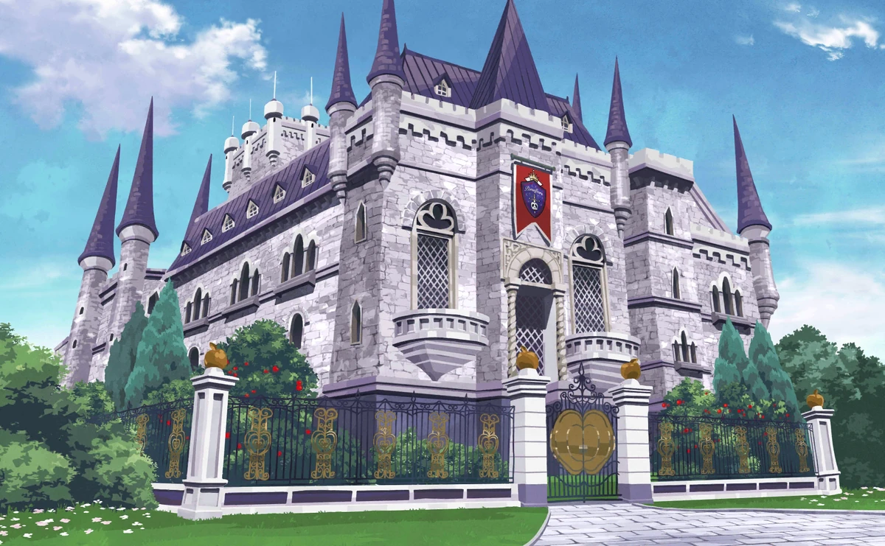

Based on the strict, orderly spirit of the "Queen of Heart's" from Alice in Wonderland. Known for enforcing 810 bizarre rules. Students are defined by their strict adherence to a rigid, often absurd, code of conduct. They are also known for being the largest, most disciplined dorm, who are often seen wearing red-and-white uniforms, and value justice.


Based on the "Fairest Queen" from Snow White and the Seven Dwarfs. It emphasizes beauty, elegance, and relentless self-betterment, with students excelling in potionology and curses. The dorm, often characterized by its luxurious, somewhat restrictive, and highly aesthetic environment.
Based on the "King of Beasts'" spirit of persistence from The Lion King. Located in a desert area near a Spelldrive stadium, this dorm houses athletic, tenacious, and competitive students, many of whom are beastmen. It emphasizes strength and determination to overcome any obstacle.


Based on the "Thorn Fairy" from Sleeping Beauty, embodying the spirit of nobility. It is characterized by its gothic, castle-like atmosphere, scarce sunlight, and a student body known for exceptional magical capabilities. It prioritizes, and was founded for, naturally gifted students.

Based on the "Sea Witch" from The Little Mermaid, focusing on intelligence, strategy, and compassion. Students run the Mostro Lounge café. Located underwater, the dorm features a luxurious, pale gray-purple aesthetic with sea-themed, tentacled, and seashell motifs.

Based on the "Sorcerer of the Sands" from Aladdin designed around the spirit of mindfulness, careful planning, and resourcefulness. It features a warm, opulent, Middle Eastern-inspired aesthetic, including desert landscapes, an oasis, and luxurious, richly decorated interiors.


Based on the diligence of the "Underworld King" from Hercules, housing tech-savvy, quiet, and serious students. It specializes in non-magical technology, magical-energy engineering, and research. Residents are persistent, often preferring to avoid socialization and work in isolation.